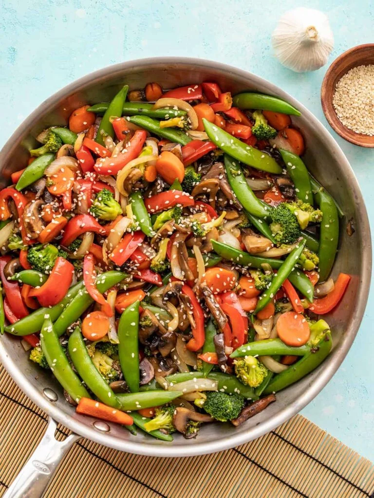

Vegetable Stir-Fry

Vegetable Stir-Fry
Description
A quick and healthy stir-fry packed with colorful vegetables and a savory homemade sauce.
Ingredients
- 2 cups broccoli florets
- 1 bell pepper, sliced
- 1 carrot, sliced
- 1 cup snap peas
- 2 cloves garlic, minced
- 2 tbsp soy sauce
- 1 tbsp sesame oil
- 1 tsp cornstarch
- 2 tbsp water
- Cooked rice for serving
Steps
- Mix the soy sauce, water, and cornstarch in a small bowl.
- Heat sesame oil in a large skillet or wok.
- Add garlic and cook for 30 seconds.
- Add the vegetables and stir-fry for 5–7 minutes.
- Pour in the sauce mixture.
- Cook until the sauce thickens and coats the vegetables.
- Remove from heat.
- Serve over cooked rice.
Previous pages